GRACIAS POR ACOMPAÑARNOS EN UN DÍA TAN ESPECIAL
14 AÑOS DESPUÉS


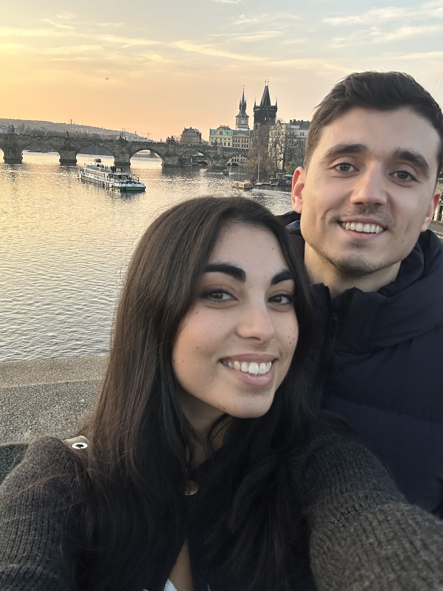
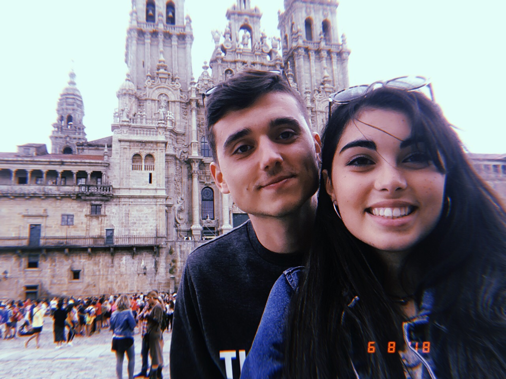
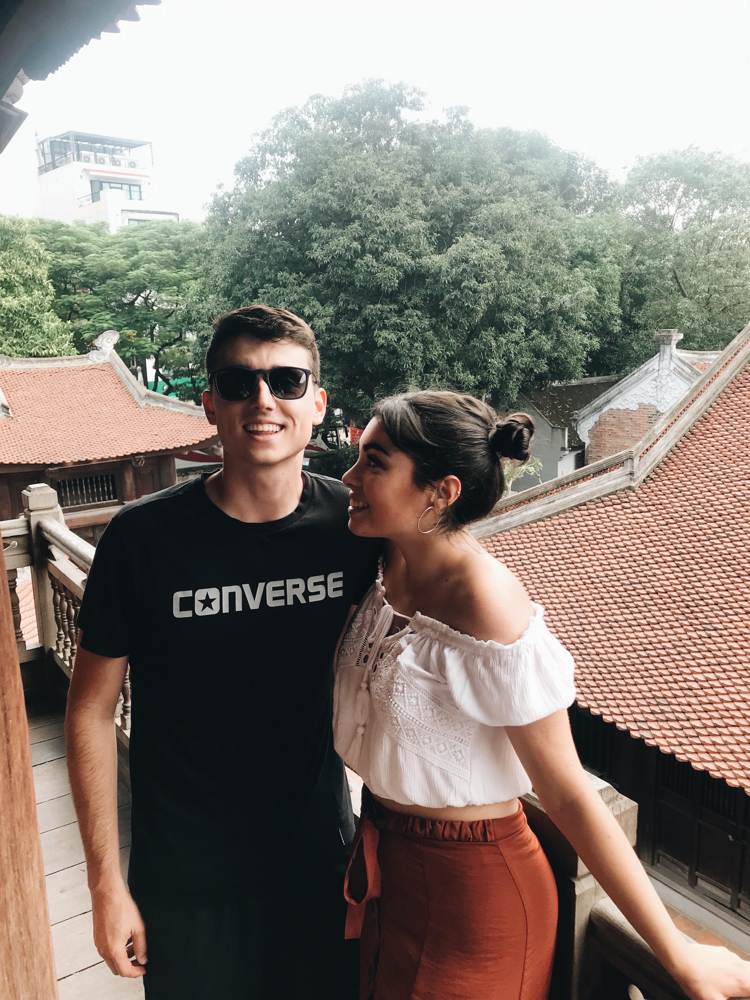

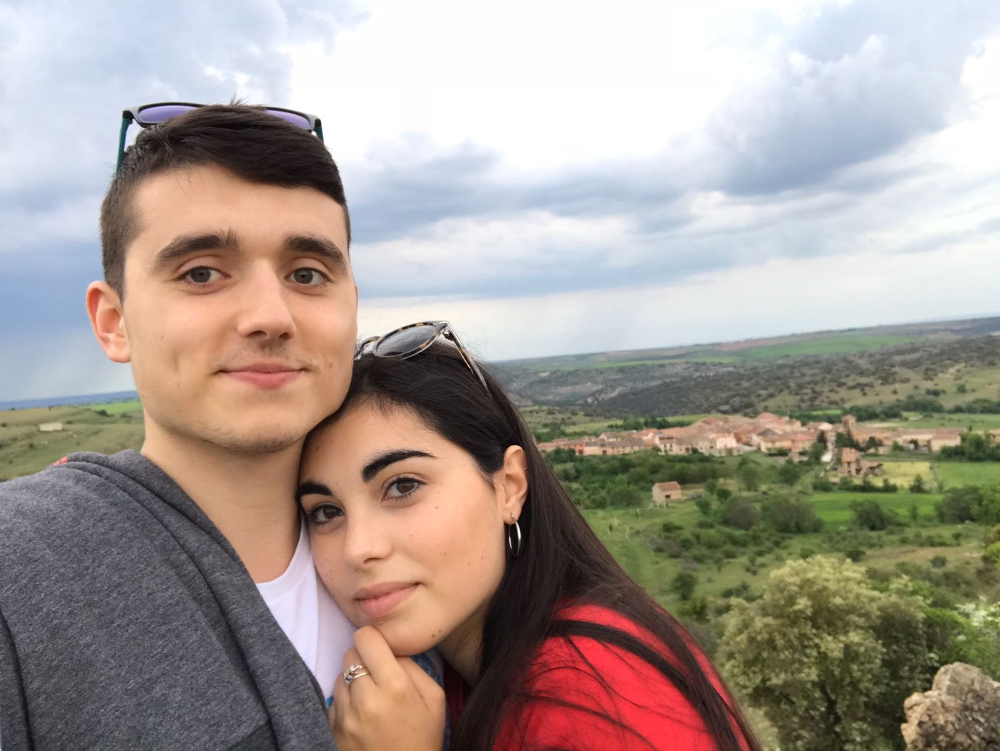
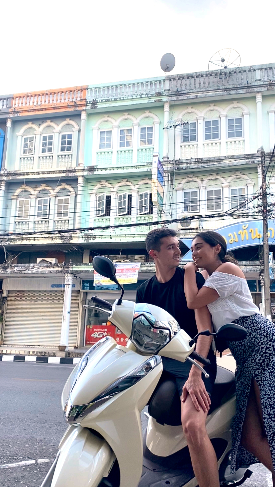
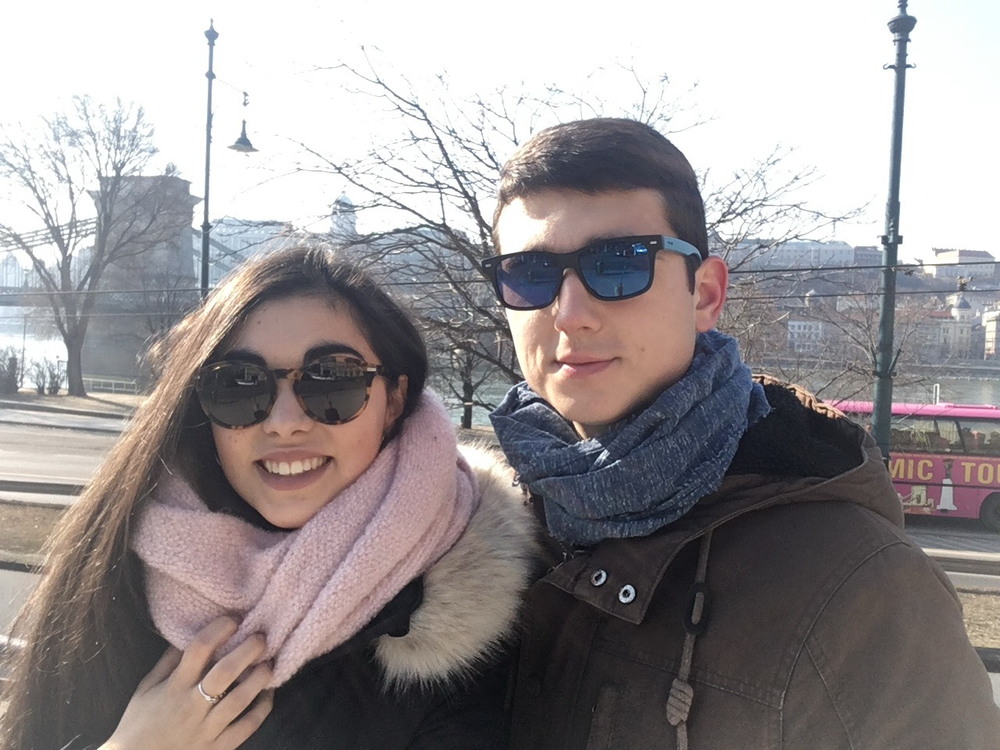
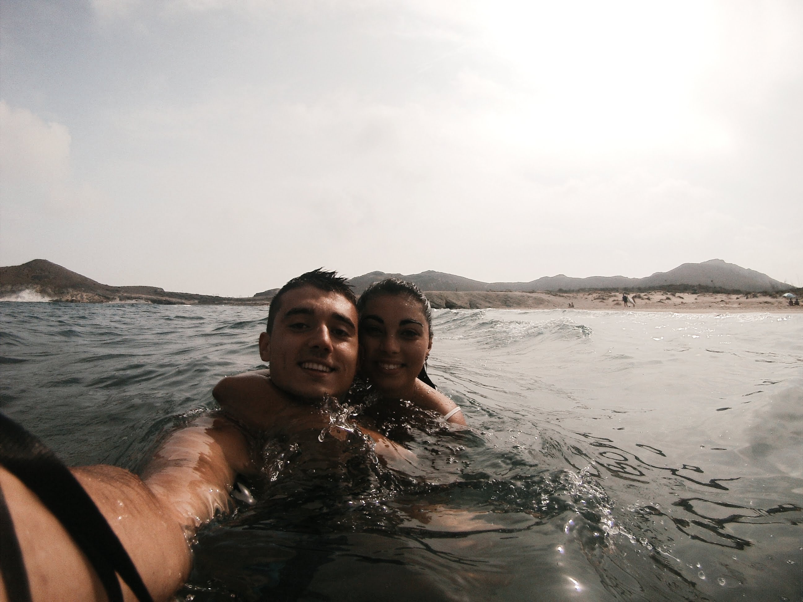
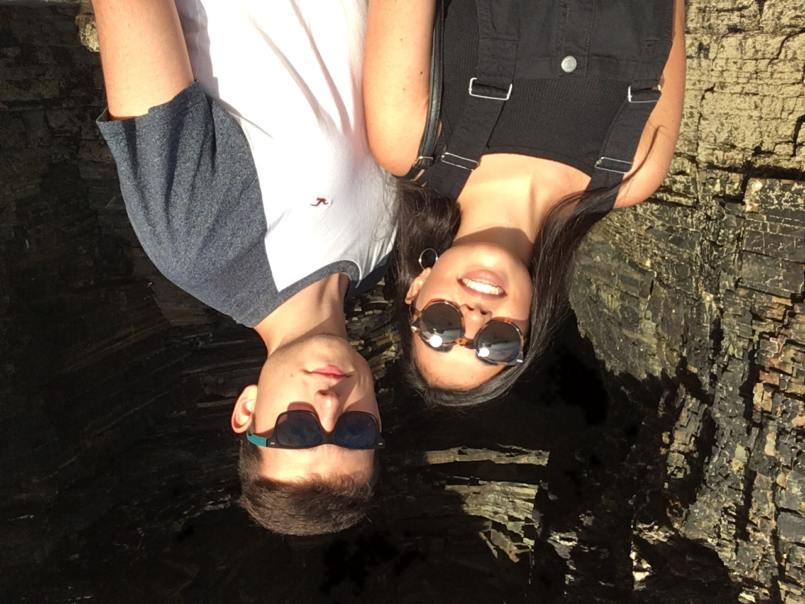
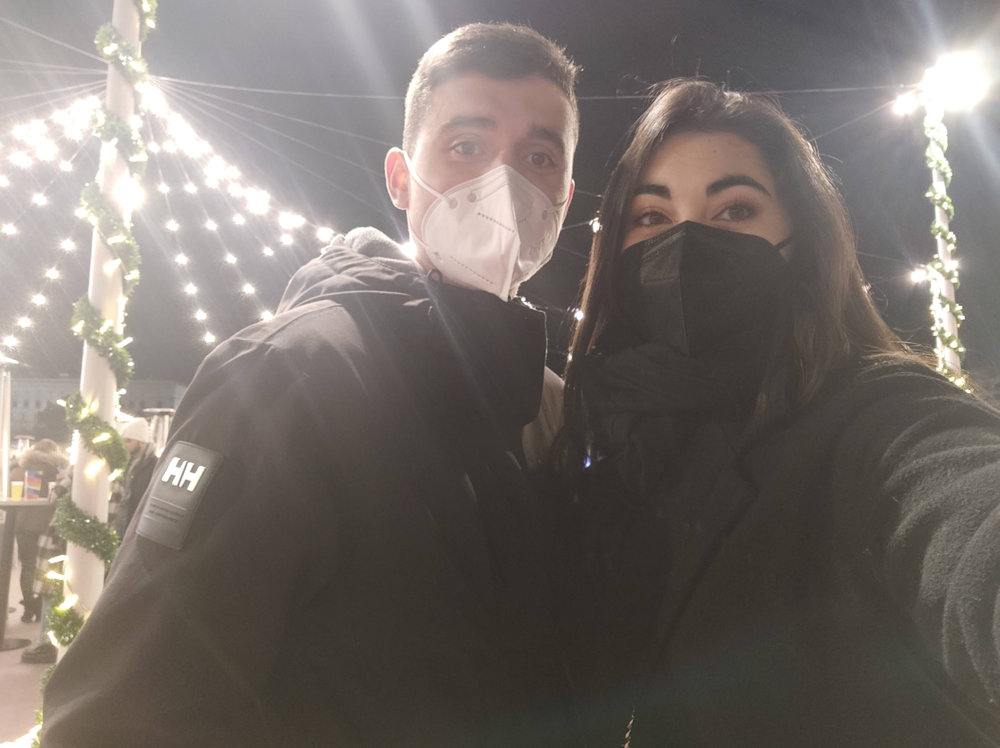


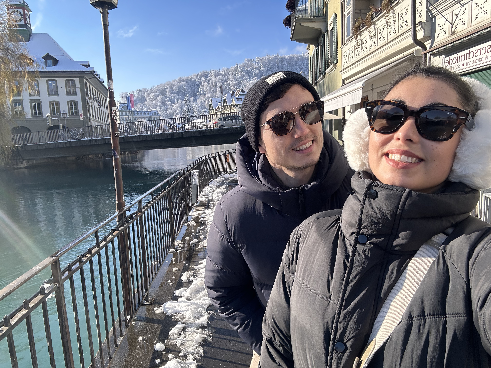
26 de septiembre del 2026
12:15
↓
Para el día más especial de nuestras vidas
Finca casa del Esquileo
Segovia es casa, es refugio y es donde empezó todo. Esta zona es muy nuestra: aquí se crió parte de nuestra familia y es donde siempre nos hemos sentido en casa. Por eso, no podíamos imaginar otro lugar para dar el “sí quiero” que no hablara de nuestras raices.
Elegimos Casa El Esquileo, en Cabanillas del Monte, porque es patrimonio vivo de Castilla. Este lugar fue el corazón de la tradición lanera hace 300 años, pero lo que realmente nos cautivó es que sus muros aún “hablan”: en las piedras del salón todavía se pueden leer los nombres y dibujos que los esquiladores grabaron mientras trabajaban en el siglo XVIII.
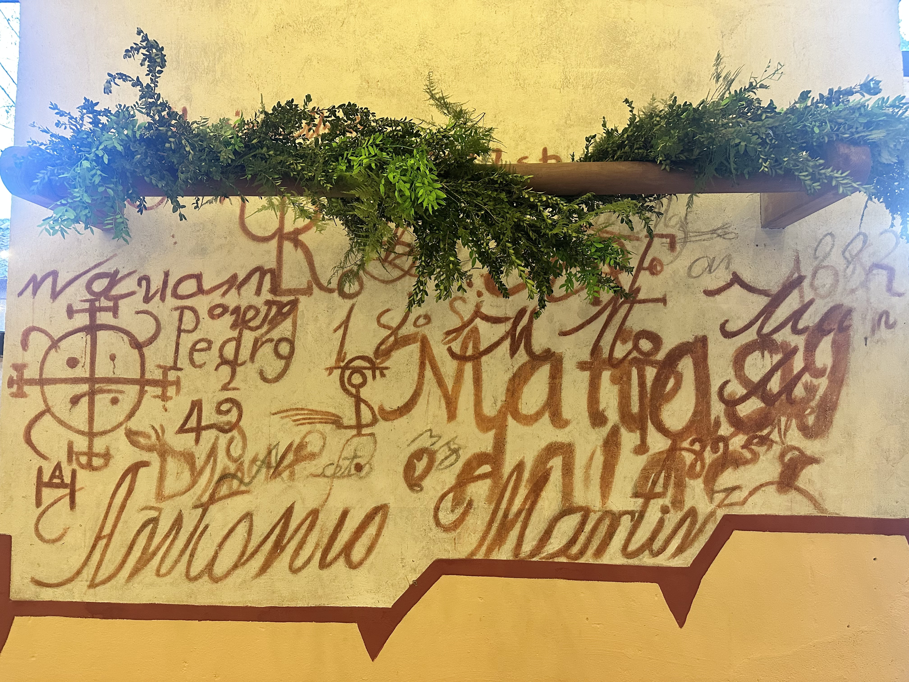
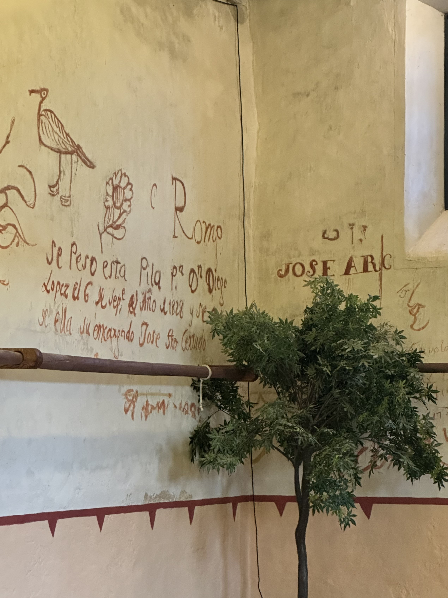
Queríamos que vivieseis la full experience de fiesta en Segovia y hemos hablado con el ayuntamiento de Cabanillas para que al acabar la boda comience en la plaza del pueblo una orquesta con su posterior discomovil!
Venid preparados con ropa de abrigo y deportivas cómodas para darlo todo después de la boda que hay fiesta para quien aguante hasta las 7 de la mañana!
Como ese día son fiestas en Cabanillas del Monte, os recomendamos buscar alojamiento en los pueblos cercanos: Torrecaballeros, Trescasas o Brieva. Allí encontraréis un ambiente mas tranquilo para descansar.
Podéis optar tanto por hostales (aquí os dejamos nuestra selección) como por las casas rurales disponibles de la zona.
Torrecaballeros
Torrecaballeros
Torrecaballeros
Queremos disfrutar de un fin de semana completo con vosotros y no podía ser de otra forma que calentando motores para la boda.
Os invitamos a pasar la tarde del viernes 25 de septiembre con bien de cervecita, picoteo y muchos nervios.
La realizaremos en el jardín donde Elena pasó su infancia, en casa de su abuela, en Brieva. Es un lugar muy especial para compartir con vosotros estos momentos previos a la boda.
GRACIAS POR ACOMPAÑARNOS EN UN DÍA TAN ESPECIAL
14 AÑOS DESPUÉS









